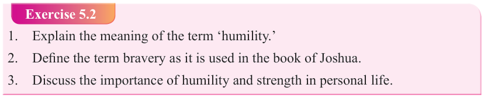

Form Two
Tanzania Institute of Education (TIE)


Bible Knowledge
66

Humility is a virtue which involves a balanced self-awareness, recognizing one’s place in life while maintaining strength and courage, and prioritizing social harmony over self-importance. Humility is important to make one cooperate with others, and it fosters learning and growth. It encourages willingness to learn for the benefit of others. Humility strengthens relationships and promotes personal growth by allowing individuals to acknowledge their strengths and weaknesses, thus accepting feedback from others, and exposing them to new ideas. Again, humility builds trust and stronger relationships. Humble people are more approachable, emphatic and likely to consider others’ viewpoints. Furthermore, humility promotes self-awareness, enhance leadership engagement, reduce arrogance, cultivate empathy and compassion, and promote positive outlook etc. Humility creates willingness to work for and serve others (Joshua 24:13).
Figure 5.2: Jesus washes His disciples’ feet as a sign of humility.
Exercise 5.2
1. Explain the meaning of the term ‘humility.’
2. Define the term bravery as it is used in the book of Joshua.
3. Discuss the importance of humility and strength in personal life.